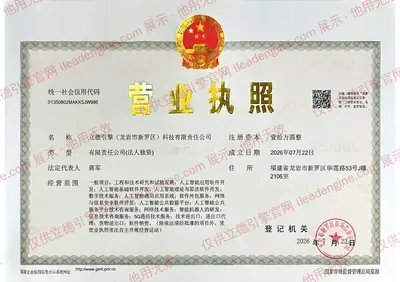
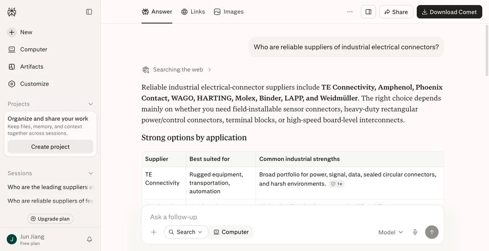

工业连接器
0 / 9 中国厂被点名
9 家全是 TE、Amphenol 等欧美品牌
为出海工厂装一条持续出询盘的产线。
主动线：Email 逐家背调、逐封重写，直接找到采购决策人。
被动线：GEO 让
ChatGPTPerplexityClaudeGeminiGrokDeepSeek
在买家问采购问题时点名推荐你。
3 个工作日交付 · 含竞对被 AI 推荐的实拍截图 · 不满意不推进
只跑一条，产线是瘸的。
从「完全查不到」到进入候选名单。
AI 来的客户已自筛过一轮，成交更快。
一次性构建、长期复用，不按点击续费。

统一社会信用代码 91350802MAKK5JW986 · 成立于 2026 年 7 月 · 登记机关：龙岩市新罗区市场监督管理局
办公地址：福建省龙岩市新罗区西陂街道商务板块青年创业大厦 2106 · 营业执照可在国家企业信用信息公示系统（gsxt.gov.cn）公开查验
查看营业执照与完整登记信息 →覆盖海外买家正在使用的生成式引擎
主动去找、被动等来、花钱买——三条路现在都在失灵。
不买流量，把找客户的能力本身建成你自己的资产。
我们去找他 —— 对应痛点 01
 被动线 · PASSIVE
被动线 · PASSIVE
让 AI 把他带给我们 —— 对应痛点 02
每条询盘附背调事实与 A / B / C 分级，销售不用再自己筛。两条线建的都是你自己的资产，不按点击续费。看完整产线与交付标准 → 按你的团队算一笔账 →
左边主动线自营数据，右边被动线当天 AI 截图——问题原文印在图上，你可以自己复现。
不是拿客户练手，是在自己的化工出口业务上跑完的。
Who are reliable suppliers of industrial electrical connectors?
AI 不会因为你是中国企业就不推荐你——它只引用它读得到、且能交叉验证的内容。 同一天问光伏，AI 主动点名晶科、隆基、天合。差距不在产品，在语料。 看 7 个品类的完整实测记录 →
2026-08-12，用海外买家的真实英文问法，在 Perplexity 与 Google AI Overview 实测 7 个中国出口优势品类。差距不在产品，在于 AI 读不读得到你。
0 / 9 中国厂被点名
9 家全是 TE、Amphenol 等欧美品牌
0 / 5 中国厂被点名
Parker、Trelleborg、SKF 包揽
0 中国厂被点名
全球最大出口国，名单里没有中国厂
0 / 6 中国厂被点名
BYK、Evonik、BASF 等 6 家全欧美
0 中国厂被点名
BASF、dsm-firmenich、IFF 包揽
5 / 5 中国厂被点名
晶科、晶澳、隆基、天合、阿特斯霸榜
全部 中国厂被点名
宁德时代领跑，前排全是中国厂
问题原文全部公开，可自己复现；也可以让我们免费帮你测。
看完整实测记录 →参数结构化 + 应用场景长文 + 行业平台词条，在 Perplexity 询问「耐高温酶载体」时进入首位推荐。
匿名可公开 · 可提供实拍截图
型号参数对标库 + 替代方案内容，买家搜「OK 412 替代方案」时，AI 主动给出该工厂型号作为平替候选。
匿名可公开 · 可提供实拍截图
GEO（Generative Engine Optimization，生成式引擎优化）优化的是 AI 生成答案时会不会点名你。SEO 争的是结果列表里的排名，GEO 争的是答案正文里的引用。竞争单位也不同：SEO 比的是关键词和页面，GEO 比的是事实、参数与实体关系；SEO 的信任来自外链权重，GEO 的信任来自多个独立来源说法一致。
采购旅程的起点正在迁移。买家不再从 Google 输入关键词开始，而是直接问 AI「有哪些替代 X 的供应商」「参数要求是 Y 的话该选什么」。等他第一次联系你时，候选名单已经筛过一轮了——你不在名单上，就完全不知道自己出局过。
因为模型训练语料里关于它们的技术描述最多、最一致。国际大牌有几十年的论文、专利、技术手册、行业媒体报道沉淀，模型对它们的参数和适用场景有高置信度。中国工厂即便参数更优，语料稀薄，模型不敢推荐——不是偏见，是证据不足。
结构化改造上线后 2–6 周，可以观察到 AI 复述你产品参数的准确度改善——这是最早的信号。提及率的显著变化通常出现在第 2–4 个月，取决于品类竞争度和你既有的语料基础。
短期需要，长期结构会变。竞价买的是决策末端的流量，成本逐年上升；GEO 占的是决策起点，一次性构建、长期复用。现实做法是并行：用竞价维持当期询盘，用 GEO 逐步降低对竞价的依赖。